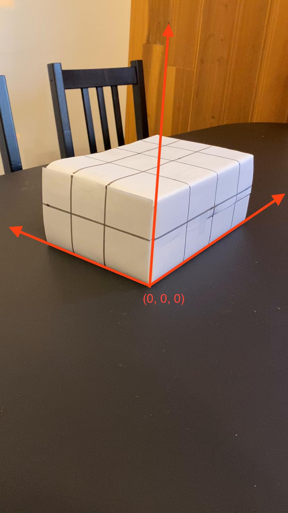
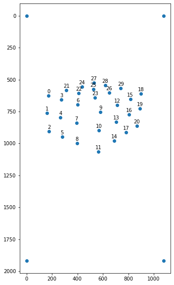
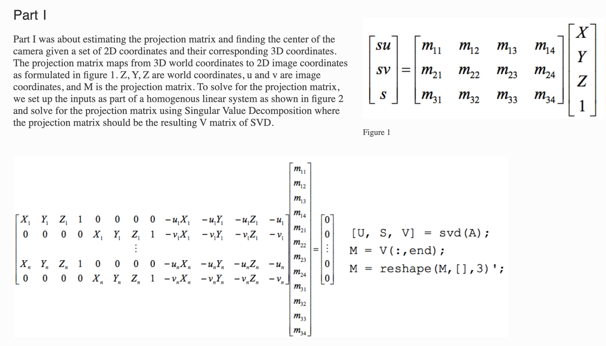
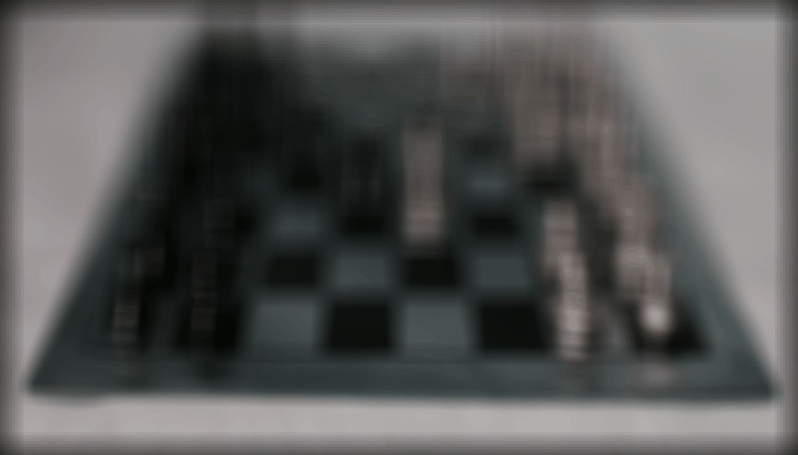
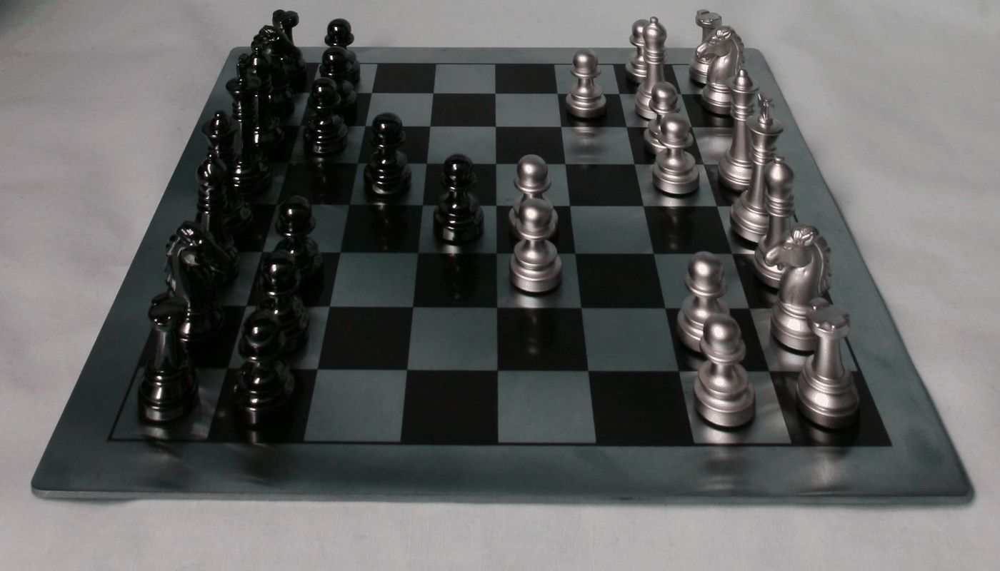

Poor Man's Augmented Reality
Overview and Explanation
The goal was to add a virtual cube by smartly computing the camera projection matrices for each frame and converting the mesh's world coordinates in image coordinates to draw on.
I started off with the following video I made of a shoebox wrapped with marked paper, which can be visible below.
 Original Video of Shoebox with Grid Pattern
Original Video of Shoebox with Grid Pattern
|
The next step was to accurately track the coordinate lattice points on the shoebox to calculate the camera's projection matrices.
The world coordinates of the shoebox's lattice points can be labeled by defining the world axes as the edges of the shoebox.
Only for the first frame of the video, I manually labeled the image coordinates of each of the shoebox's lattice points.
|

First Frame of Shoebox Marked with Coordinate Axis
|

Labeled Image Coordinates of Lattice Points Visualization
|
To get the image coordinates of each lattice point for the rest of the frames,
I used a CRST tracker to track these corners. This tracker was recomputing the bounding boxes for every frame and allowed me compute the projection matrices based off the following system.
 CRST-Tracked Bounding Boxes
CRST-Tracked Bounding Boxes
|

Camera Projection Matrix Estimation Equations
|
Final Poor Man's Results!
Finally, to draw the cube mesh from the scene into the image virtually, it was a matter of using the projection matrices the find the image coordinates of the meshs' keypoints in world space.
This led to final following results:
 Augmented Reality
Augmented Reality
|
Light Field Cameras
Overview and Explanation
Light Field Cameras allow us to refocus an image after capturing a photo because the camera records the ray direction. This additional information allows for a variety of post-processing effects, including depth refocusing and aperture adjustment, which are unique features of light field photography.
This is achieved using an array of micro-lenses placed in front of the image sensor.
Each micro-lens captures a slightly different perspective of the scene, creating a grid of sub-images on the sensor. This grid of perspectives is known as a light field, and it contains information about the direction of light rays at each point in the scene.
I used Stanford's Light Field Archive to showcase these computations, where a 17x17 grid of cameras were taking pictures of a chessboard scene, each acting as a microlens.
Depth Refocusing
This is achieved by computationally simulating the effects of changing the focus distance.
Each pixel in the light field contains information about the light rays coming from different depths.
By adjusting the focus digitally, the software can selectively combine the rays to create a sharp image at the desired depth, effectively changing the focus point after capturing the image.
The results are depicted below.
|

Changing Focus by Varying Hyperparamter Alpha: [-1.0, -0.8, -0.6, -0.4, -0.2, 0, 0.2]
|
Aperture Adjustment
Because the camera (micro-lens) array captures light rays from different depths, aperture adjustment is computed by adjusting the weighting and combination of rays captured by the micro-lenses to achieve the desired depth of field effect.
The results are depicted below.
|

Modifying Depth of Field by Varying Aperature Radius: [0, 10, 15, 20, 30, 80]
|
Bells and Whistles
I tried to do some light field capture from own photos, but they did not turn out so great. I must have miscalculated the real world coordinates, but there was also a lot of weird colors coming up - the yellow banana picture I took somehow became all blue, and all refocusing efforts disappeared.
 Modifying Depth of Field by Varying Aperature Radius: [0, 10, 15, 20, 30, 80]
Modifying Depth of Field by Varying Aperature Radius: [0, 10, 15, 20, 30, 80]
|